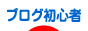

ブログランキングサイトの比較と一覧
おすすめのブログランキングサイトの比較と一覧情報です。
こちら、お願いしますね、、。
|  |
| 【終了】 |
| ランキングはこちらをクリック！ / ブログ王 |
| 【終了】 |
ブログランキングというのは、あなたのブログからのアクセスがあるとポイントが付与され、ランキングサイト上で上位に表示されることによって、アクセスアップをはかれる仕組みのことです。
「こちらをクリック！」とか、「ぽちっとお願いします。」とか書かれているのは、たいていはランキングサイトのリンクです。
ブログランキングへの登録は審査のあるところもありますが、たいていは審査なしで参加することができます。
ブログランキングを比較してみますと、多くのユーザーが参加しているランキングサイトは精度が高めです。
１位に表示されているブログはおもしろいのが多い傾向にあります。
検索エンジンではヒットしない人気のブログを探すには、ブックマークサービスやRSSなどもありますが、ブログランキングも探してみることをおすすめします。
ランキングバナーの貼り方としては、別窓表示にすることだと思います。
<a href="http://ブログランキングサイトのURL/IDなど" target="_blank">ランキングバナー</a>
html のリンクタグに「 target="_blank" 」をいれておくと、開いているページはそのままに、新らしい別窓で開いて移動してくれます。
私はランキングバナーが目に入ると、とりあえずはクリックしているのですが、これから読もうと思っている場合はどうにも時間がかかってしまうのです。
そんなときは、別窓で開いてくれると便利です。
ちなみに、ブログランキングサイトには in と out が表示されていますが、out のカウント数が多いカテゴリほど、上位表示された場合にアクセスが多くなります。
また、たいていのブログランキングは被リンク元としては認識されていないので、SEO効果はほとんど期待できません。
ブログのコンテンツにぴったり合ったカテゴリーを選択するようにしましょう。
- ブログランキングサイトへの登録方法
ブログのランキングサイトというのがあるようなので、いくつか登録してみました。 登録方法はいたって簡単で、自分のブログのＵＲＬなど必要事項を入力し、もらったバナーを自分のブログに貼り付けるだけです。 ... - 無料ブログのAlexaランキングを比較
無料ブログのランキングをAlexaで比較してみました。国際ランキングと国内ランキングを比べてみますと、日本では専門のブログサービスが好まれる傾向にあるようです。... - ブログのアイコンバナーの作り方
ブログランキングや相互リンクなど、何かと必要になることが多いブログのアイコンバナーですが、今回はグーグル無料ツールの picasa を使用して、手作りバナーを作ってみました。結論からいうとアイコンバナ...